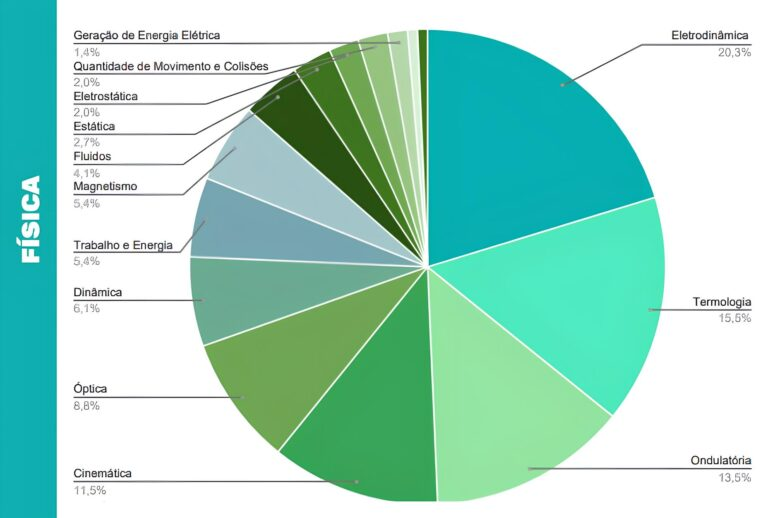

Física no Enem 2024: 5 assuntos que mais caem na prova
Em síntese, os 5 assuntos que mais aparecem nas questões de Física no Enem:
1.Termologia.
2.Ondulatória.
3.Cinemática.
4.Óptica.
Abaixo, você pode conferir um gráfico com informações gerais dos assuntos de Física no Enem.
A prova do Enem, na disciplina de Física, costuma ser bem diversificada, abordando conteúdos introdutórios e mais aprofundados. Entre os top 5 assuntos, a eletrodinâmica é o primeiro, com 20,3% de incidência. Depois, estão a termologia e a ondulatória, com 15,5% e 13,5% de presença, respectivamente.
Vale ressaltar que eletrodinâmica, termologia e ondulatória compõem quase 50% da prova de Física do Enem. Depois, temos a cinemática, com 11,5%, e a óptica, com 8,8%.
Eletrodinâmica
No Enem, as questões de eletrodinâmica costumam perguntar sobre equipamentos elétricos (em que talvez seja necessário analisar manuais de funcionamento) e circuitos domésticos.
Para se dar bem, é importante entender o significado e como calcular as seguintes grandezas do assunto: tensão, resistência, corrente, potência elétrica e, principalmente, resistência equivalente a partir de uma associação de resistores - esse último tópico é o mais cobrado!
Além disso, não deixe de revisar as Leis de Ohm para responder a perguntas simples como: "Por que o disjuntor cai durante um banho muito quente?", "As lâmpadas de uma casa são associadas em série ou em paralelo?", "O que gera um curto circuito?" e "O que é potência elétrica e como ela aparece na conta de luz?".
Ah, nos últimos anos, o Enem também deu certa atenção a geradores elétricos!
Termologia
A termologia é o estudo dos fenômenos físicos relacionados ao calor e à temperatura. É importante entender muito bem o conceito de calor, as suas formas de transmissão (condução, convecção e irradiação) e a diferença entre calor e temperatura.
Na termologia, existe ainda calorimetria, especialmente quando se fala em equilíbrio térmico. Nesse conintroo, busque entender como usar a equação fundamental da calorimetria, chamada de calor sensível (é a fórmula do “que macete”, lembra? Q = m . c ΔT).
Ondulatória
É necessário saber como relacionar as principais características de uma onda: velocidade, frequência e comprimento de onda. Para isso, não se esqueça da equação fundamental da ondulatória: v = λ · f.
Em algumas questões, o vestibulando também precisa identificar fenômenos ondulatórios em situações cotidianas, principalmente difração, interferência, ressonância e efeito Doppler. Vale ressaltar, para isso, a importância de diferenciar uma onda eletromagnética de uma onda mecânica.
Cinemática
Na cinemática, estude movimento circular, além de fundamentos da cinemática, movimento uniformemente variado e lançamentos.
As funções horárias também são essenciais para resolver as questões de cinemática, assim como os conceitos de velocidade, velocidade média e aceleração.
Óptica
A óptica é o campo da Física que estuda os fenômenos relacionados à luz. Essa área costuma ser dividida em óptica geométrica e a óptica ondulatória. A primeira estuda os fenômenos luminosos utilizando raios de luz, enquanto a segunda usa os fenômenos ondulatórios para explicar comportamentos da luz, como a polarização e a interferência.